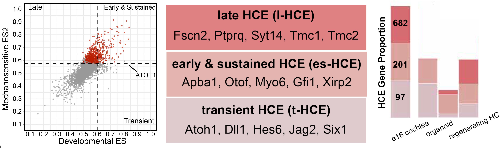

About the HRP
The Hearing Restoration Project is a collaborative effort to accelerate research to promote hair cell regeneration. Current efforts are focused on identifying the molecular instructions that permit hair cell regeneration from supporting cells in some species, organs, and timepoints so that we can develop approaches to recapitulate these events in the human cochlea. We comprise thirteen laboratories in the US and Canada that meet regularly to identify roadblocks in the field, brainstorm solutions, develop resources, and share and discuss data. We also aim to have a broader effect on the field by training and supporting young scientists in our labs and by creating a platform for others to benefit from the data we have produced. gEAR was developed with support from HRP and the Hearing Health Foundation.
Focus
Over the past decade, the main HRP focus has been collecting and analyzing transcriptomic data from hearing and vestibular organs in zebrafish, chicken, mouse, and humans. All of these organs share a common mechanism: sound waves, head movements, and gravitational forces each result in fluid motions that are detected by mechanosensory hair cells. Damage to hair cells is the most common cause of hearing loss. Towards identifying and comparing gene regulatory networks associated with regeneration or its failure, we have developed computational approaches that overcome the challenge of comparing data generated using different methods and with different gene nomenclature. As a first step towards describing the transcriptional trajectories that supporting cells undergo as they respond to hair cell loss, we compared transcriptomes and identified genes that are enriched in hair cells compared to supporting cells in 36 different hair cell types. Similar analyses of supporting cells are underway and will be shared with the community in the future.
Publications
prdm1a drives a fate switch between hair cells of different mechanosensory organs
Jeremy E. Sandler, Tatjana Piotrowski, et al.
Nature Communications volume 16, Article number: 7662 (2025) [link]
Tools - HRP Hair Cell Explorer
To facilitate exploration of the data we analyzed and to use the results to design and evaluate efforts to promote hair cell regeneration, we developed the HRP Hair Cell Explorer. This application can be used to look more closely at the analyses we performed, to assess the enrichment of a gene of interest in hair cells from other species and timepoints, and to identify potential new markers for those hair cells. We also established a list of 884 “hair cell enriched” (HCE) genes that are enriched in developing and mature hair cells across species, providing a common metric for assessing the nature of hair cells regenerated experimentally. Examples of how this list can be used are provided in the application.
